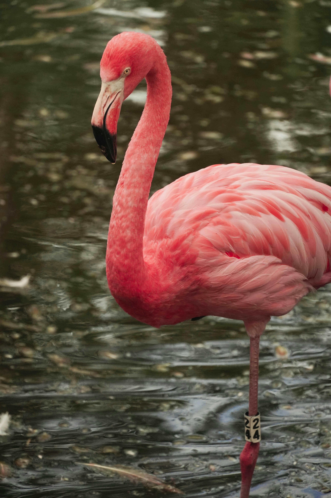

Parrot

Parrots can understand context — not just mimic. Some even use words meaningfully to communicate with humans.
Know MorePigeon

Pigeons can recognize their own reflection — a rare ability among birds — and can even remember human faces!
Know MoreCrow

Crows are incredibly smart — they use tools, recognize faces, and even hold grudges against people who wronged them!
Know MorePeacock

Peacocks can shake their feathers at precise frequencies to produce a low, almost inaudible humming sound to attract mates.
Know MoreOwl

Owls can rotate their heads **270°** — their eyes are fixed, so they turn their necks to see around!
Know MoreEagle

Eagles can spot prey from more than **3 km away** — their eyesight is about **8 times sharper** than humans.
Know MoreSparrow

Sparrows are social and emotional birds — they often feed their old or injured companions.
Know MoreDuck

Ducks’ quacks do echo — but it’s hard to hear because the echo blends perfectly with the original sound.
Know MorePenguin

Penguins propose by giving pebbles — a male penguin offers a smooth stone to his chosen partner as a symbol of love.
Know MoreFlamingo
Flamingos are naturally **white** — they turn pink because of the **beta-carotene** in the algae and shrimp they eat.
Know More